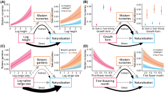
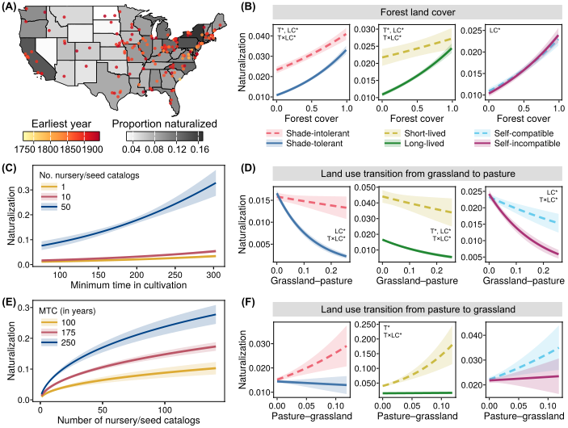
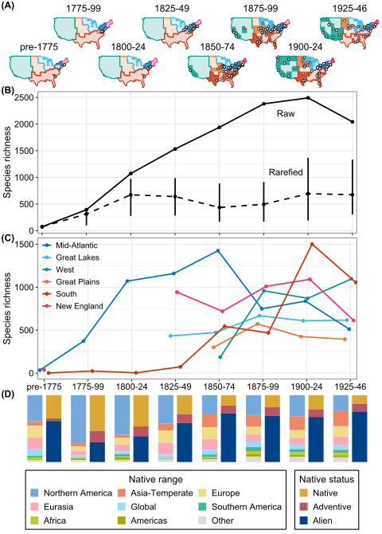

Cultivation influences plant invasion
Cultivated plants, including any species sown/planted and cared for by people, are essential to support human health and well-being, serving our basic needs and providing diverse sociocultural and environmental services. However, because cultivated plants often originate from other regions around the world and because they are abundantly planted throughout landscapes in farms, gardens, and other landscaped areas, there is a serious risk that non-native cultivated plants can escape cultivation, establish persistent populations, spread on their own, and have negative impacts on native ecosystems (Reichard & White 2001, Mack & Erneberg 2002, van Kleunen et al. 2018). Protecting biodiversity and ecosystem sustainability, for example, by meeting Target 6 of the Kunming-Montreal Global Biodiversity Framework and many of the UN Sustainable Development Goals, requires understanding how past and present human activities have interacted with species’ and environmental characteristics to shape invasion.
I use large scale, macroecological analyses with historical and present-day records of cultivated species to understand cultivation’s role in invasion. These records are useful because knowing what species were cultivated, when they were cultivated, and where they were cultivated is important for understanding why only some of the plants that were introduced to a new area and cultivated there establish and potentially become invasive while others do not. In a study of over 17,000 non-native plant species known to be introduced to Great Britain from historical records, we found that cultivation in historical and present-day botanic gardens and commercial nurseries mediated invasion (Kinlock et al. 2022). In Great Britain, historical plant collecting and exchange generated a huge pool of cultivated non-native species and fostered a culture of gardening valuing non-native species. We found that non-native species that were perennial herbs, taller, with larger native ranges and earlier flowering were more likely to establish persistent populations, but at the same time, species with these characteristics were more likely to be cultivated. Also, cultivation became an increasingly important influence relative to species traits at later stages of invasion.

Figure from Kinlock et al. (2022) in Global Ecology and Biogeography showing a selection of mediation analyses of the direct and indirect effects of species characteristics on naturalization, mediated by cultivation variables. Path diagrams are shown with gray arrows and estimated average direct and indirect effects are shown as black arrows. Partial regression estimates, assuming all other variables are at their baseline, are shown on either side of the path diagrams: to the left is the effect of the species characteristic on the cultivation variable, and to the right is the effect of the species characteristic on naturalization (grouped by the cultivation variable).
Teasing apart trait–environment interactions using historical cultivation records
I am seeking to better understand the way that the traits of cultivated plants and the environment in which plants are cultivated (both present-day and historical) influence which plants establish in a new area. Using historical cultivation records allows us to test for such trait–environment interactions because we can control for which species were introduced and how often species were planted in the new region. By understanding environmental context dependence at large spatial scales, we can define alternative invasion strategies that can allow for context specific predictions of invasion risk. We used historical records of nearly 4,000 non-native ornamental plant species for sale in nurseries/seed houses across the conterminous US in order to disentangle the context dependence of the traits promoting naturalization in different landscape types (Kinlock et al. 2025). A large portion (about 40%) have since established in the US, especially species that were introduced earlier or were more widely available in nurseries. We found that ruderal traits adaptive for disturbance, like short lifespan, shade intolerance, and self-compatibility, promoted naturalization, but that this depended on land cover and agricultural land use context. Non-ruderal species were more likely to establish in US states with higher forest cover at the time of their introduction, supporting an alternative invasion strategy in forest landscapes, and matching observations from smaller-scale studies in US forests (Huebner 2003, Martin and Marks 2006, Gavier-Pizarro et al. 2010, Kuhman et al. 2011, Matlack and Schaub 2011). Land use conversion between pasture and grassland favored ruderal species, which supports observations of annual species invasions in the western US (Allen and Knight 1984, Inouye et al. 1987, Davies et al. 2021).

Figure from Kinlock et al. (2025) in Ecography. (A, C, E) The influence of cultivation history on ornamental plant naturalization in the conterminous US. (A) Map of historical nurseries/seed houses whose catalogs were used to compile the introduced species pool. Point color shows the earliest year a catalog was published at that location. State shade represents the proportion of the total introduced plant species pool that naturalized. (C, E) Naturalization probability in US states as a function of (C) minimum time in cultivation (MTC, in years) and (E) number of nursery/seed catalogs in which a species was available (back-transformed from natural log) from models including only these main and interaction effects. (B, D, F) The effects of species’ traits (shade tolerance, lifespan, and self-compatibility) on naturalization probability in US states depends on land cover fractions in states at the time species first appeared in historical nursery/seed catalogs. Land cover fractions are: (B) forest land cover, (D) land use transition from grassland to pasture, and (F) transition from pasture to grassland. Significant effects of traits (T), land cover (LC), or interaction effects (T × LC) are indicated with an asterisk. Lines are means and bands are Wald-type 95% CIs of partial regression estimates.
Cultivated plant diversity reflects historical events, trends, and policies
I also study shifts in the diversity and structure of cultivated floras across regions and time periods, which are very important because the plants that people have cultivated in an area over time create an ecological and evolutionary context that influences the environment as we experience it today. We investigated taxonomic and phylogenetic diversity across regions and time periods using historical records of ornamental plant species for sale in nurseries/seed houses in the US, the same sources as described above, but including both native and non-native species (Kinlock et al. 2023). Diversity increased from the beginning of the US horticultural industry up to the early 20th century, reflecting the westward proliferation of nurseries and increasingly globalized plant imports, and tapered off in the mid-20th century, concurrently with the world wars and policies regulating the international and interstate trade of plants. We found phylogenetically clustered floras (closely related species) in the Northeast and phylogenetically overdispersed floras (distantly related species) in the Southeast and West, reflecting selection for cold tolerance and supplementing floras with species from other parts of the world, respectively. The number and proportion of non-native species increased over time, matching the transition from US nurserymen cultivating native plants for the purpose of sending them to Europe towards an independent US horticultural industry supported by international trade and collections. Regional nursery floras were initially relatively distinct, but became taxonomically and phylogenetically homogenized over time. Whether human-dominated landscapes can sustain ecosystem services like pollination and habitat provision depends on the diversity of the plants cultivated there, and the species cultivated in present-day US urban areas are species-rich, mostly non-native, and homogeneous across space (Avolio et al. 2020, Cavender-Bares et al. 2020, Pearse et al. 2018). Our study demonstrates that these patterns were already present in historical nursery offerings, meaning that historical cultivated floras left lasting imprints on our environments today.

Figure from Kinlock et al. (2023) in Plants, People, Planet showing the composition of the historical US ornamental nursery flora in quarter-century time periods. (A) Nursery locations are white points, and states with nurseries are highlighted with present-day boundaries. (B) Taxonomic diversity, measured as raw species richness (solid line) and rarefied species richness (dashed line). For rarefied richness, the number of plant trade lists in each time period was subsampled to equal the minimum number of lists in any time period (six), and error bars are 0.025 and 0.975 quantiles from the random rarefaction distribution. (C) Regional species richness of the nursery flora. (D) Breakdown of native regions (bars on left) and native status (bars on right) for the nursery flora in each time period.
The structure of plant interactions in communities
I reinterpreted plant–plant interactions in communities as networks of plant competition and facilitation (Kinlock 2019). This way, I could make quantitative generalizations about plant community structure using metrics from network theory that summarize complex community-level features. I developed a meta-analytic approach to estimate network metrics incorporating interaction uncertainty across 31 plant communities. I found that competition was the dominant interaction, but its average intensity was not particularly strong. The average intensity of intraspecific interactions was not significantly different from interspecific interactions. Overall, interactions were imbalanced and communities were transitive. However, within some individual networks, facilitation, strong intraspecific competition, balanced interactions, and intransitivity were observed. Additionally, I found that the prevalence of competitive, imbalanced interactions, and transitive patterns may have been systematically biased as a result of the types of experiments and study systems favored by plant ecologists.
I further sought to characterize plant community structure using a more complex system of network interactions at multiple scales. To do this, I conducted an experiment in an old field at the Yale Myers Forest in northeastern Connecticut to measure all interactions between woody species at multiple life stages (Kinlock 2021). I used these pairwise interactions as the basis for an analysis of the network-level structure of the community. I translated mechanisms for species coexistence into corresponding network structural features. By characterizing network architecture at the scale of an entire community (comparing interactions at different life stages), the substructures that compose the network, and species’ roles within substructures, I found a mixture of both stabilizing and destabilizing network structures, involving intransitive and transitive substructures of different sizes and with different intensities among seedlings and nestedness in the relationships between seedlings and adults. Furthermore, the expected outcomes of interactions among species at one life stage were contrary to the expected outcomes at a different life stage, and this role reversal at different life stages could promote coexistence in the community.

Figure from Kinlock (2021) in Journal of Ecology. Seedling-seedling (A, B) and adult-seedling (C, D) interaction networks. Network visualizations (A, C): nodes are species (light gray nodes are invasive at the study site), edges are interaction intensities, RIIij. Edge widths are proportional to interaction intensity. Arrows point from the neighbor/adult species towards the target species. Blue edges represent facilitative interactions and red edges represent competitive interactions. Bold genus names are adults, and all other nodes are seedlings. Matrix visualizations (B, D): the color of the matrix element is the interaction intensity, RIIij, of neighbor/adult species j on target species i. Species are abbreviated as the first two letters in the genus name. One interaction in which seedlings died in all replicates is shown in gray.
Plant–plant interaction networks and spatial patterns influence invasiveness and invasibility
Understanding what aspects of community structure influence invasibility and what invader characteristics influence invasiveness is particularly challenging because we tend to be limited by observational data. To be able to test these hypotheses, we used stochastic spatial lattice simulations of invasion in plant communities (Kinlock & Munch 2021). We invaded communities with hypothetical non-native species that had different life history traits and competitive abilities to test which characteristics of the invader species contributed most to their invasiveness. We also simulated communities with different species richnesses and interaction network structures (transitive hierarchies, reversed transitive hierarchies representing a growth versus fecundity trade-off, and intransitive loops) to test which characteristics of the resident community contributed most to its invasibility. These simulations were carried out using a parallelized C++ program that I co-wrote, ecolattice. We found that communities with more species were more resistant to invasion. Generally, communities with intransitive competition were more invasible and communities with transitive competition were more resistant to invasion. Among high-richness communities, those with reversed competitive hierarchies at different life stages were the most resistant to invasion. Structural features that promoted species coexistence in communities were generally associated with an increase in invasibility. Invasiveness was primarily driven by life history, including fecundity and dispersal abilities, and by their competitive response to the resident community (competitive effect was not influential). Importantly, we found that spatial patterns in the resident community were associated with invasion; communities with more intraspecific clustering and interspecific segregation were more invasible, both patterns that are associated with increased niche differentiation among species.

Figure from Kinlock & Munch (2021) in Oikos. Schematic of the simulation study design, including species richness scenarios, competition structure scenarios, and species abundances from an example simulation. Competition structure scenarios are represented using competition matrices and networks (G = growth competition, F = fecundity competition, more competitive = more negative) for five-species communities. Resident species are shown in color and the invader species in black. Individual locations for a 50 × 50 subset of the lattice are shown for the example simulation.